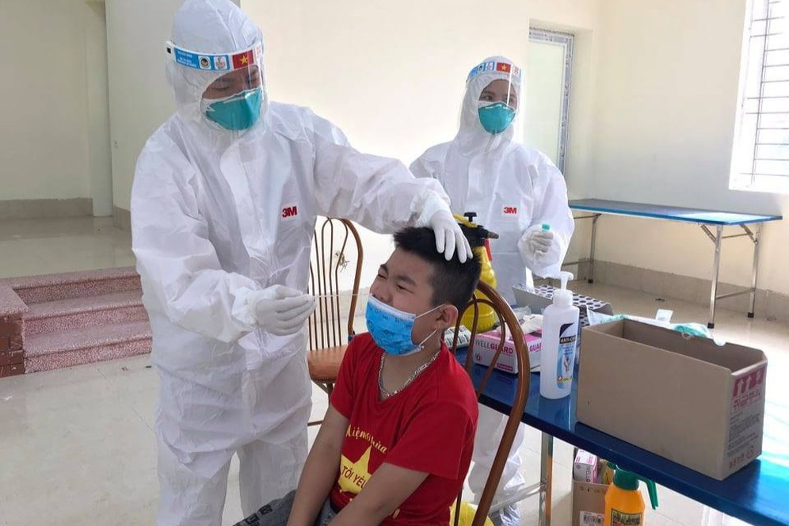

|

Họp khẩn với Đà Nẵng, Bắc Ninh, Bắc Giang, Phó Thủ tướng Vũ Đức Đam xác định khó khăn lớn nhất khi dịch phát sinh trong các khu công nghiệp là năng lực xét nghiệm cho kịp tốc độ truy vết Covid-19…
Ngày 12/5, Phó Thủ tướng Vũ Đức Đam, Trưởng Ban Chỉ đạo quốc gia phòng chống dịch Covid-19 đã họp trực tuyến với TP Đà Nẵng, Bắc Ninh, Bắc Giang sau khi các địa phương này ghi nhận một số ca bệnh trong khu công nghiệp (KCN)
|
TIN TỨC SỰ KIỆN
- Chủ tịch nước:"Làm chính sách từ cuộc sống, không phải trong phòng lạnh"
- Bí thư Hà Nội: Dập dịch nhưng không pho-ng tỏa cực đoan,"ngăn sông cấm chợ"
- 4 nhân viên Bệnh viện chợ Rẫy phản ứng nặng khi chích ngừa Covid-19
- Hưng Yên: 2 ca dương tính với SARS-CoV-2 là mẹ con
- Ổ dịch huyện Thuận Thành lớn nhất nước, 90 ca dương tính SARS-CoV-2
|